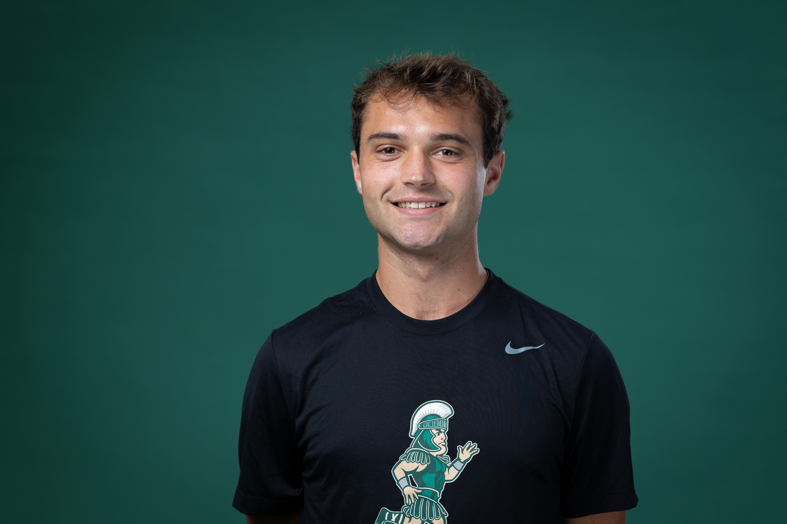

Drew Seabase
Student • Runner • Spartans Sports blogger
About Me
My name is Drew Seabase. I am a fifth-year undergrad student in Games and Interactive Media. I also run for the men’s Cross Country team here at State. After I graduate, I plan to train for the Olympic Trials in the triathlon as well as work toward my Master’s degree in Computer Science. This blog mainly covers Michigan State sports updates.
Quick Facts About Me
- I run 95–100 miles a week
- My fastest mile time is 4:06
- Favorite race distance: 8k (Cross Country)
Right Now
I’m currently applying for a Master’s program while also training for my final Cross Country season. My goals are to make the final team for regionals and nationals, and to place within the top 50 individuals at the Big Ten Cross Country Championships. I’m especially excited because we’re hosting Big Tens in East Lansing at Forest Akers Golf Course on October 31st—it’s going to be an amazing day.